02.9 확률의 정의와 성질 (수학적/실험적/기하학적 확률)
이 장에서는 확률의 정의와 성질 (수학적/실험적/기하학적 확률)에 관한 기초부터 심화 개념들을 유기적으로 결합하여 학습합니다.
02.9.1 확률의 뜻과 실험적 확률
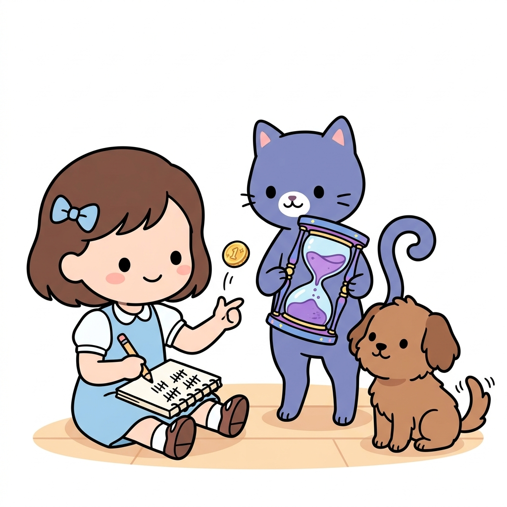
그림 02-9-1 동전을 직접 백 번 던지며 앞뒷면이 나오는 횟수를 장부에 적는 도로시와 시간의 경과에 따른 수렴을 설명하는 지니확률이란 불확실한 결과를 객관적으로 파악하기 위한 수단입니다. 특히 주사위나 동전을 무수히 많이 던지는 실험을 통해 얻은 비율인 실험적 확률과, 시행 횟수가 끝없이 많아질수록 이론적인 진짜 확률에 가깝게 수렴한다는 대수의 법칙을 도로시의 동전 던지기 기록장과 함께 직관적으로 배워봅시다!
1. 학습 목표
- 확률의 기본적 의미를 이해한다.
- 실험이나 관찰을 통해 얻어지는 실험적 확률(통계적 확률)의 개념을 이해한다.
- 대수의 법칙(Law of Large Numbers)의 의의를 파악한다.
2. 핵심 개념
(1) 확률의 의미
- 확률 (Probability): 어떤 사건이 일어날 수 있는 가능성을 수치로 나타낸 것입니다. 보통 0과 1 사이의 값(또는 0%와 100% 사이)으로 표현합니다.
- 표현 방식: 분수, 소수, 백분율 등.
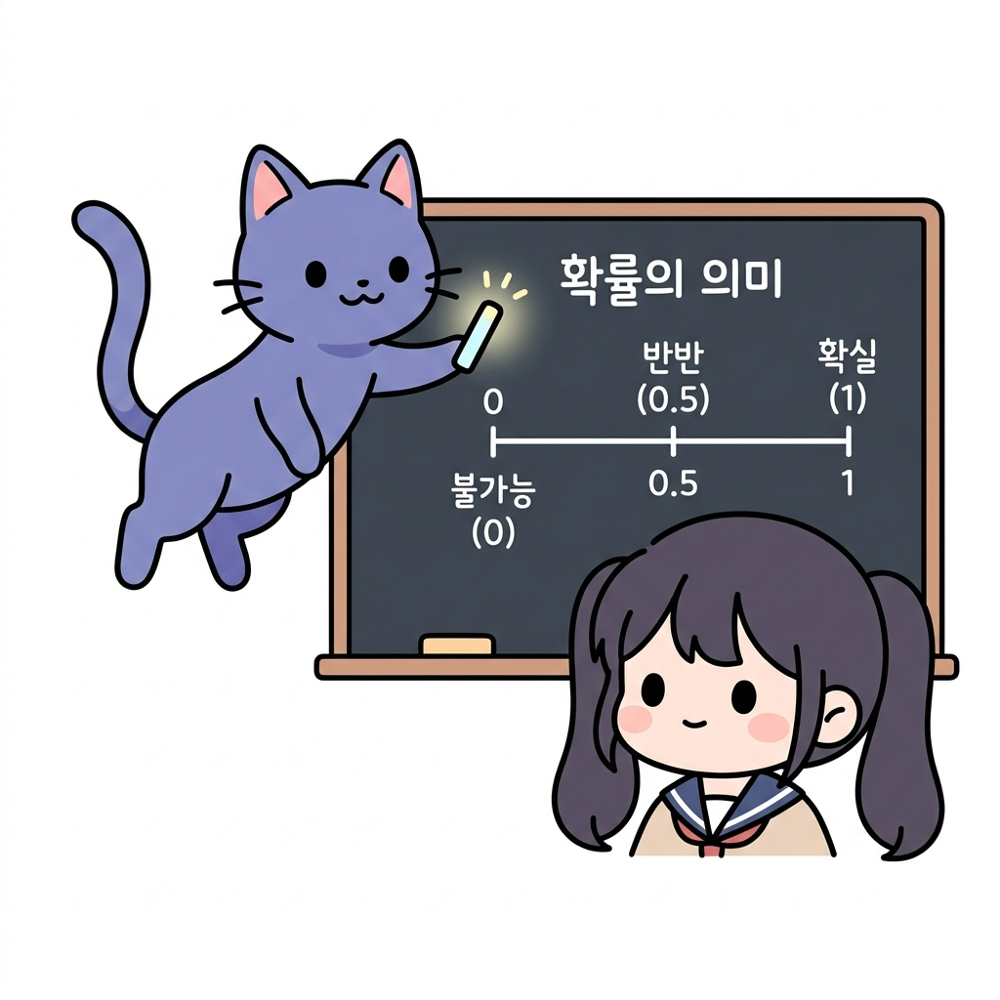
그림 02-9-2 확률이 의미하는 불가능(0)부터 확실(1)까지의 스펙트럼과 가능성 표현 방식(2) 실험적 확률 (Empirical Probability / 통계적 확률)
- 동일한 조건 아래에서 어떤 실험이나 관찰을 N번 반복할 때, 사건 A가 일어난 횟수를 r이라 하면, N을 충분히 크게 함에 따라 상대도수 r / N이 일어나는 비율이 일정한 값 P에 한없이 가까워집니다. 이 일정한 값 P를 사건 A의 실험적 확률(통계적 확률) 이라고 합니다. P(A) ≈ r / N (단, N은 충분히 큰 수)
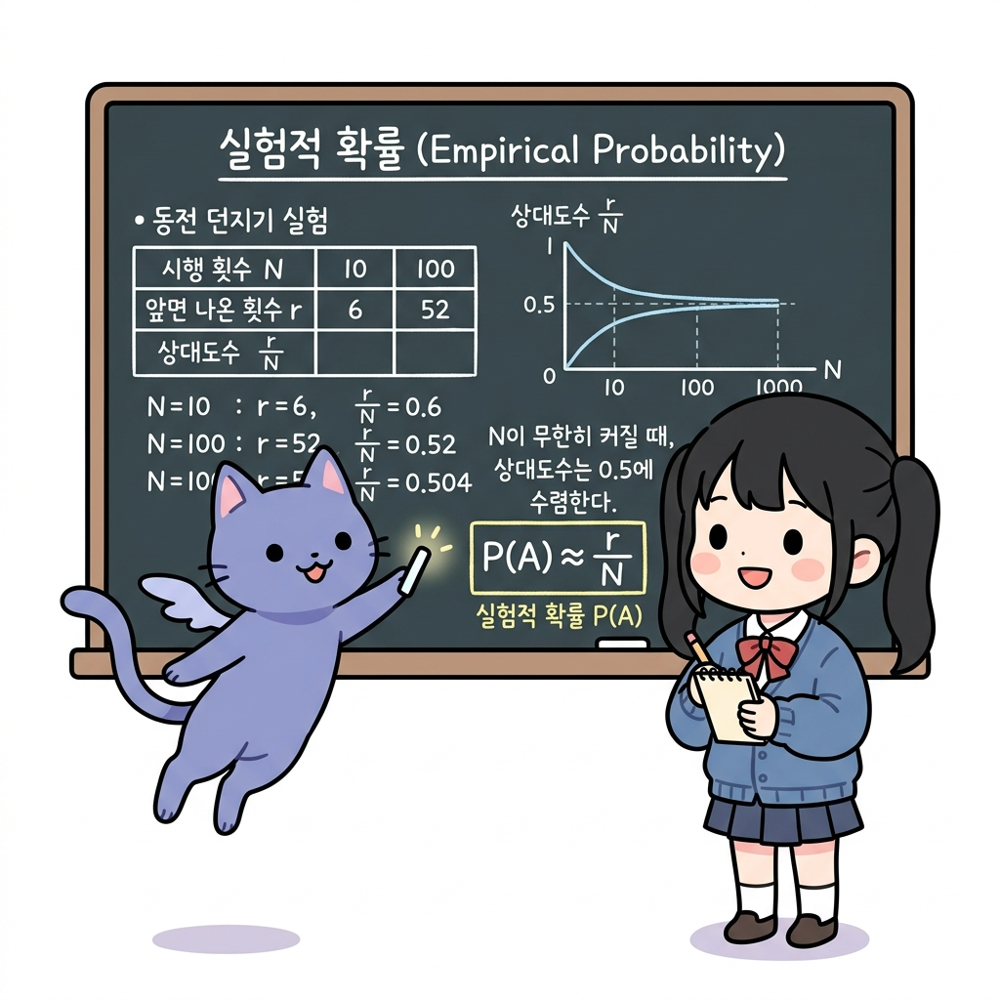
그림 02-9-3 주사위나 동전 던지기 실험을 무수히 많이 반복하여 통계적으로 구하는 실험적 확률의 원리(3) 대수의 법칙 (Law of Large Numbers)
- 실험이나 시행의 횟수 N이 커질수록, 실험을 통해 얻어지는 상대도수 r / N은 수학적으로 계산된 참 확률에 수렴한다는 법칙입니다.
- 주의: 시행 횟수가 적을 때는 우연성이 크게 작용하여 참 확률과 격차가 생길 수 있으나, 시행 횟수가 매우 많아지면 결국 참 확률로 수렴합니다.
그림 02-9-4 동전 던지기 횟수(N)의 증가에 따른 앞면 등장 확률의 50% 수렴 현상
- 동전을 던지는 횟수가 적을 때는 앞면이 나오는 비율이 0.8이나 0.2처럼 극단적으로 나올 수 있지만, 던지는 횟수를 800번 이상 늘릴수록 결국 수학적 확률인 0.5(50%) 근처로 안정되게 수렴하게 됩니다.
3. 시각 자료: 대수의 법칙 수렴 도식
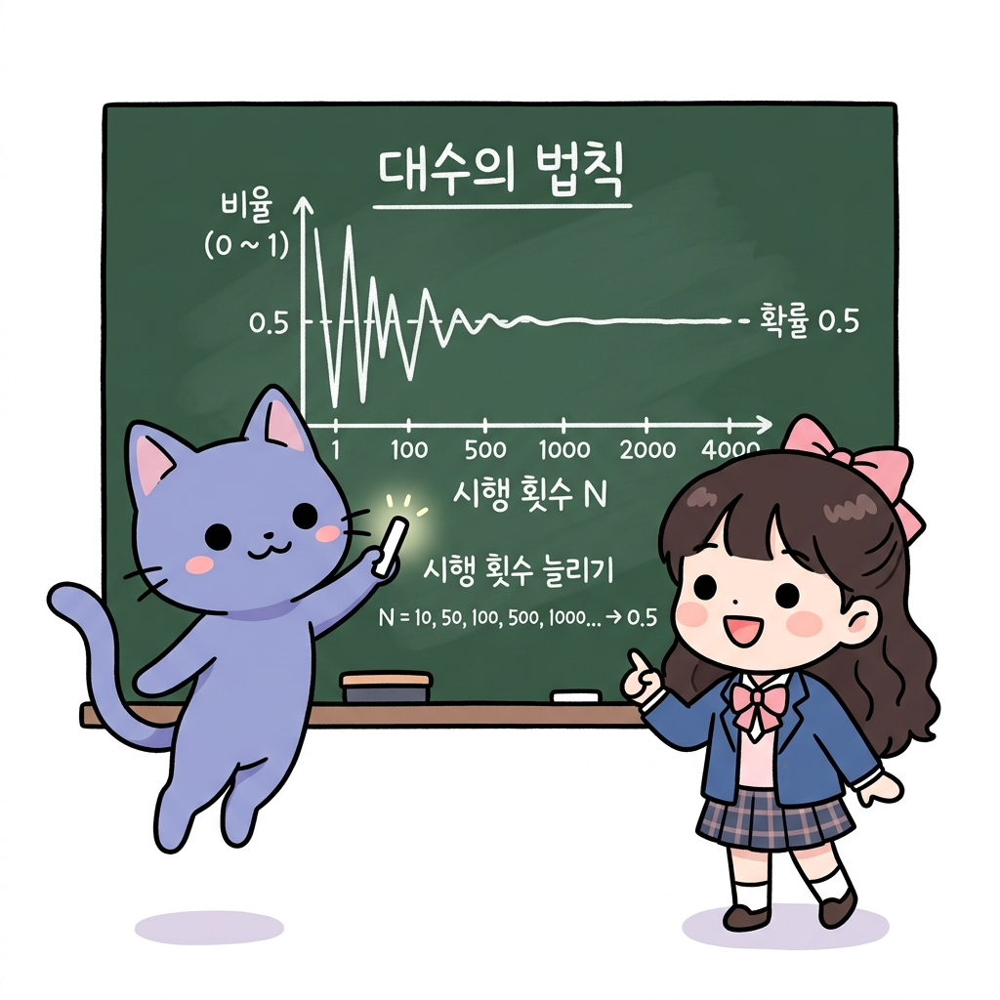
그림 02-9-5 동전 던지기 시행 횟수 N이 증가함에 따라 상대도수가 참 확률인 0.5에 수렴해가는 그래프 도식4. 실전 예제
예제 1 (실험적 확률과 상대도수)
문제: 토토가 주머니에서 특이하게 생긴 동물 복사뼈(네 면에 각각 태양, 달, 사자, 용이 그려짐)를 여러 번 던져서 ‘용’ 그림이 나오는 횟수를 기록했습니다. 기록한 표는 다음과 같습니다.
던진 횟수 (N) 용이 나온 횟수 (r) 용이 나온 비율 (r / N) 10 8 8 / 10 = 0.8 100 68 68 / 100 = 0.68 1000 709 709 / 1000 = 0.709 10000 7000 7000 / 10000 = 0.7 던지는 횟수가 늘어남에 따라 ‘용’이 나올 실험적 확률은 어떤 값에 가까워지고 있나요?
풀이: 던지는 횟수 N이 10 ➔ 100 ➔ 1000 ➔ 10000으로 커질수록, 비율 r / N이 0.8 ➔ 0.68 ➔ 0.709 ➔ 0.7로 변화하며 특정 값인 0.7에 수렴하고 있습니다. 따라서 대수의 법칙에 의해 실험적 확률은 0.7(70%)로 수렴합니다. 정답: 0.7
예제 2 (실생활에서의 확률 비교)
문제: 토토와 새로 전학 온 농구선수 친구의 자유투 성공률을 비교하려고 합니다.
- 농구선수 친구: 작년 경기에서 자유투 총 100개를 던져 60개 성공
- 토토: 연습 상황에서 자유투 총 50개를 던져 10개 성공 두 사람의 자유투 성공 확률을 비교해 보세요.
풀이:
- 농구선수 친구의 성공 확률: P(친구) = 60 / 100 = 0.6
- 토토의 성공 확률: P(토토) = 10 / 50 = 0.2
두 사람의 성공 확률을 비교했을 때, 농구선수 친구(0.6)가 토토(0.2)보다 자유투를 성공시킬 확률이 월등히 높음을 알 수 있습니다. 정답: 농구선수 친구가 더 높음 (친구: 0.6, 토토: 0.2)
5. 핵심 요약
- 확률은 어떤 사건이 발생할 가능성을 수치화한 것이다.
- 실험적 확률은 실제 여러 번의 실험이나 관찰을 통해 나타난 비율을 이용해 확률을 정의하는 방식이다.
- 대수의 법칙에 의하여 시행 횟수 N이 충분히 커질 때 실험적 확률은 실제 참 확률에 수렴한다.
02.9.2 수학적 확률과 기하학적 확률
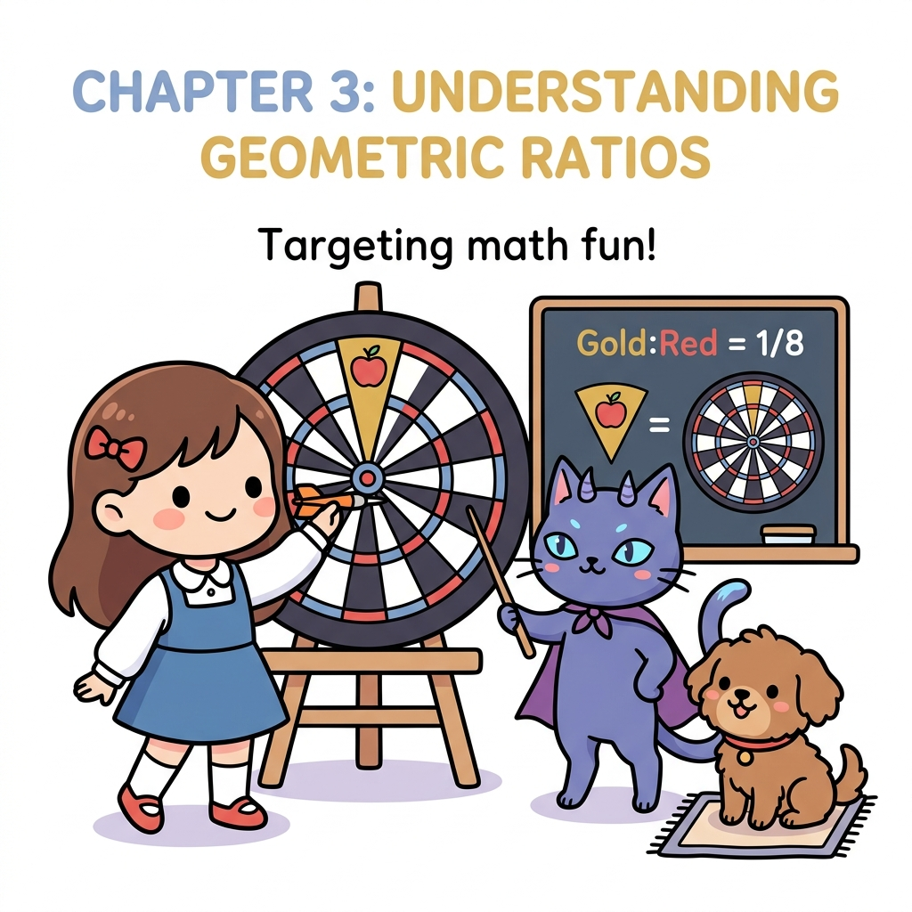
그림 02-9-6 다트 과녁판의 사과 명중 부위 면적을 활용하여 기하학적 비율과 확률을 강의하는 지니와 도로시수학적 확률은 일어날 수 있는 모든 경우의 수에 대해 특정 사건이 일어나는 경우의 수의 비율입니다. 더불어 선의 길이, 영역의 넓이, 부피의 비율로 확률을 다루는 기하학적 확률의 개념까지 지니의 마법 다트판을 통해 입체적으로 마스터해 봅시다!
1. 학습 목표
- 수학적 확률의 정의를 알고 이를 구할 수 있다.
- 확률의 기본 성질을 이해한다.
- 여사건의 확률과 확률의 덧셈정리(배반사건)를 활용할 수 있다.
- 기하학적 확률의 개념을 이해하고 적용할 수 있다.
2. 핵심 개념
(1) 수학적 확률 (Mathematical Probability)
어떤 시행에서 일어날 수 있는 모든 경우의 수가 N가지이고, 각 경우가 일어날 가능성이 모두 같을 때, 사건 A가 일어나는 경우의 수가 a가지이면 사건 A가 일어날 확률 P(A)는 다음과 같습니다. P(A) = n(A) / n(S) = a / N
- S: 표본공간 (전체 사건의 집합)
- A: 특정 사건
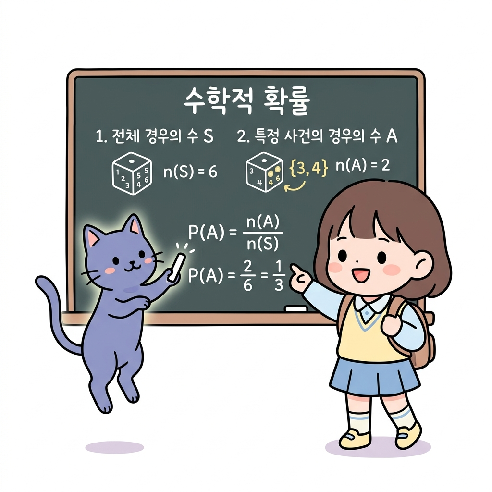
그림 02-9-7 하나의 주사위를 던지는 시행에서 특정 사건이 나타날 수학적 확률의 정의(2) 확률의 기본 성질
임의의 사건 A에 대하여:
- 사건 A가 일어날 확률 P(A)는 항상 0 이상 1 이하입니다. 0 ≤ P(A) ≤ 1
- 반드시 일어나는 사건(전체사건 S)의 확률은 1입니다. P(S) = 1
- 절대로 일어날 수 없는 사건(공사건 ∅)의 확률은 0입니다. P(∅) = 0
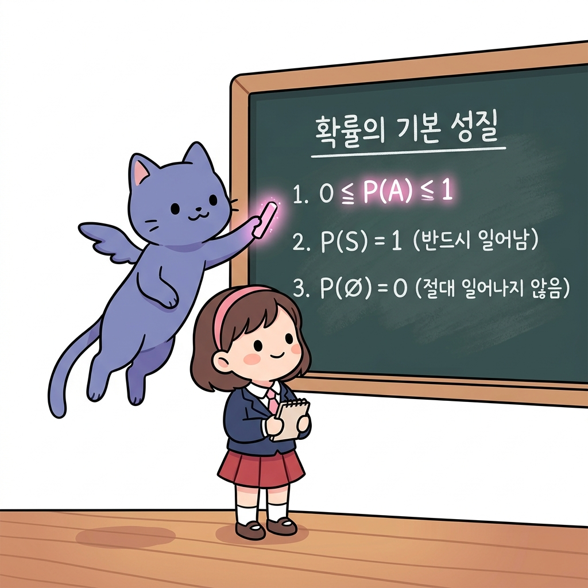
그림 02-9-8 확률값이 가지는 범주와 필연적 사건, 불가능한 사건에 대한 확률의 기본 성질(3) 여사건의 확률 (Complementary Probability)
사건 A가 일어나지 않을 사건을 A의 여사건이라 하고 Ac로 나타냅니다. 사건 A가 일어날 확률을 p라고 할 때, 사건 A가 일어나지 않을 확률 P(Ac)는 다음과 같습니다. P(Ac) = 1 - P(A) = 1 - p
(4) 확률의 덧셈정리 (배반사건)
두 사건 A, B가 동시에 일어나지 않을 때(즉, 배반사건 A ∩ B = ∅ 일 때), 사건 A 또는 사건 B가 일어날 확률은 각각의 확률의 합과 같습니다. P(A ∪ B) = P(A) + P(B)
(5) 기하학적 확률 (Geometric Probability)
- 연속적인 변수를 갖는 표본공간에서 어떤 영역 S 안에 영역 A가 포함되어 있을 때, 영역 S에 임의로 점을 하나 찍을 때 그 점이 영역 A에 들어갈 확률은 다음과 같습니다. P(A) = 영역 A의 크기 (길이, 넓이, 부피) / 전체 영역 S의 크기
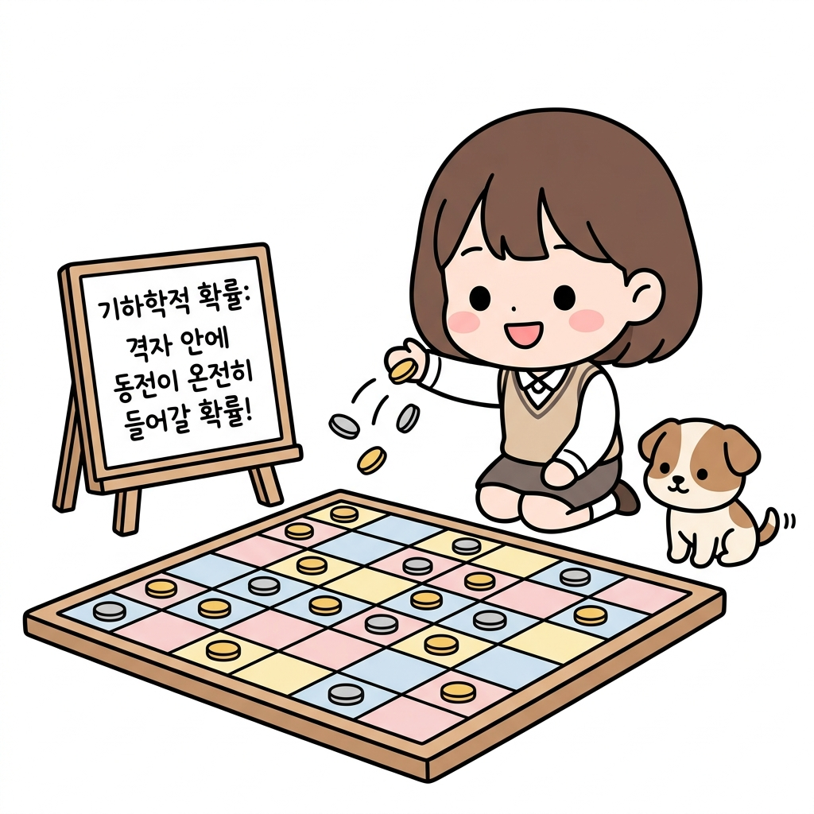
그림 02-9-9 격자 타일 바닥 위에 던져진 동전이 걸치지 않고 면적 내에 온전히 안착할 기하학적 비율 계산- 일정한 규격의 격자 타일 바닥에 동전을 임의로 던질 때, 동전이 특정 타일 영역(예: 녹색 영역) 안에 완벽하게 들어갈 확률은 전체 영역에 대비한 해당 영역의 면적 비율로 결정됩니다. 이렇게 무한한 경우의 수가 존재하는 연속적 공간에서는 경우의 수 대신 영역의 넓이 비율을 이용해 기하학적 확률을 구합니다.
3. 시각 자료: 확률의 영역과 기하학적 확률
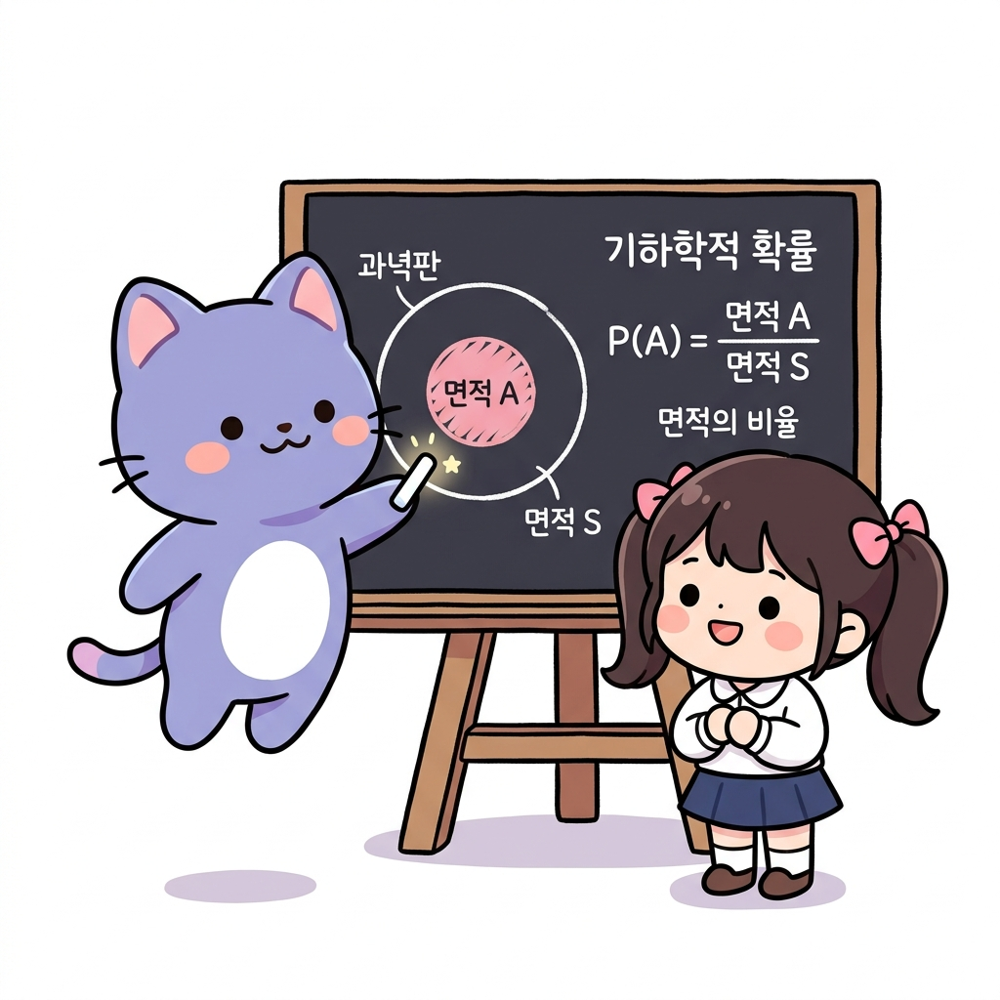
그림 02-9-10 전체 집합 영역 S와 부분 사건 영역 A의 비례 면적을 통해 기하학적 가능성을 평가하는 다트판 관계식 도식4. 실전 예제
예제 1 (수학적 확률)
문제: 서로 다른 두 개의 주사위를 동시에 던질 때, 두 눈의 수의 합이 10 이상일 확률을 구하세요.
풀이:
- 일어날 수 있는 모든 경우의 수 n(S) = 6 × 6 = 36가지
- 합이 10 이상인 사건 A: (4,6), (5,5), (5,6), (6,4), (6,5), (6,6)으로 총 6가지
- 따라서 구하고자 하는 확률 P(A)는: P(A) = n(A) / n(S) = 6 / 36 = 1 / 6 정답: 1 / 6
예제 2 (여사건의 확률)
문제: 전체 인원이 40명인 학급에서 교탁 바로 앞의 두 자리를 배정받는 제비뽑기를 하려고 합니다. 토토가 교탁 바로 앞자리에 앉지 않게 될 확률을 구하세요.
풀이:
- 교탁 바로 앞자리에 앉게 될 사건 A의 확률: P(A) = 2 / 40 = 0.05
- 교탁 바로 앞자리에 앉지 않을 사건 Ac의 확률은 여사건의 성질을 이용합니다: P(Ac) = 1 - P(A) = 1 - 0.05 = 0.95 정답: 0.95 (95%)
예제 3 (기하학적 확률)
문제: 반지름의 길이가 각각 1, 2인 동심원으로 이루어진 과녁이 있습니다. 이 과녁에 화살을 쏠 때, 화살이 빨간색 안쪽 과녁(반지름 1인 원)에 맞을 확률을 구하세요. (단, 화살은 반드시 과녁 안에 맞고, 영역에 맞을 확률은 면적에 비례합니다.)
풀이:
- 전체 영역 S(반지름 2인 원)의 넓이: π × 22 = 4π
- 표적 영역 A(반지름 1인 원)의 넓이: π × 12 = π
- 따라서 기하학적 확률은: P(A) = 영역 A의 넓이 / 전체 영역 S의 넓이 = π / 4π = 1 / 4 정답: 1 / 4 (25%)
5. 핵심 요약
- 수학적 확률은 모든 근원사건이 일어날 가능성이 같을 때, 사건 A의 경우의 수 / 전체 경우의 수로 계산한다.
- 어떤 사건 A가 일어날 확률 P(A)는 항상 0 ≤ P(A) ≤ 1이다.
- ‘적어도 ~가 아닐 확률’ 등 반대의 경우를 구할 때는 여사건의 확률 (1 - P(A))을 적용하면 편리하다.
- 연속적인 영역에서의 가능성은 기하학적 확률 (넓이의 비)을 이용해 구한다.
02.9.3 확률의 성질과 여사건
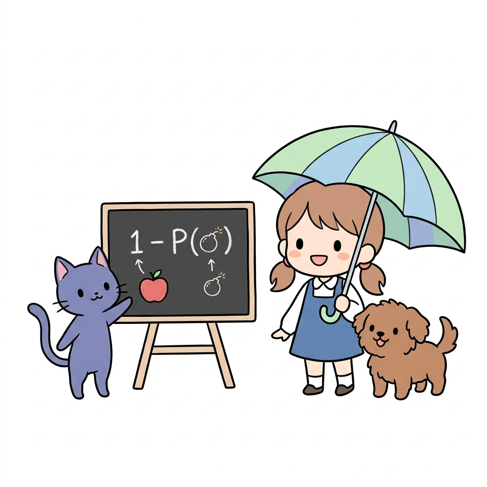
그림 02-9-11 전체 확률(1)에서 폭탄 확률 P(A)를 소거한 여사건 우산 아래에서 안심하는 도로시와 토토, 그리고 지니서로 영향을 전혀 주지 않는 독립사건의 개념과, 연이어 독립사건이 터질 때의 계산 법칙인 확률의 곱셈정리를 배웁니다. 폭탄이 터질 확률을 소거하고(여사건) 남은 안전 구역의 우산 밑에 서 있는 도로시와 지니의 비유식처럼, 확률의 빈틈없는 곱셈 법칙을 재미있게 내 것으로 만들어봅시다!
1. 학습 목표
- 독립사건의 뜻을 이해한다.
- 독립사건이 연이어 발생할 때의 확률 계산(확률의 곱셈정리)을 할 수 있다.
- 사건을 수치와 가능성으로 엄밀하게 비교하고 분석할 수 있다.
2. 핵심 개념
(1) 독립사건 (Independent Events)
두 사건 A와 B가 일어날 때, 한 사건이 일어나는 것이 다른 사건이 일어날 확률에 영향을 주지 않는 경우, 두 사건 A, B를 서로 독립(Independent) 이라고 합니다.
- 예시: 첫 번째 던진 주사위의 눈과 두 번째 던진 주사위의 눈은 서로에게 영향을 미치지 않으므로 독립사건입니다.
(2) 독립사건의 확률의 곱셈
두 사건 A, B가 서로 독립일 때, 두 사건이 동시에(또는 연이어) 일어날 확률 P(A ∩ B)는 각 사건이 일어날 확률의 곱과 같습니다. P(A ∩ B) = P(A) × P(B)
- 활용: 표본공간을 직접 그려서 모든 조합을 세지 않아도, 개별 확률의 곱을 통해 손쉽게 전체 확률을 계산할 수 있습니다.
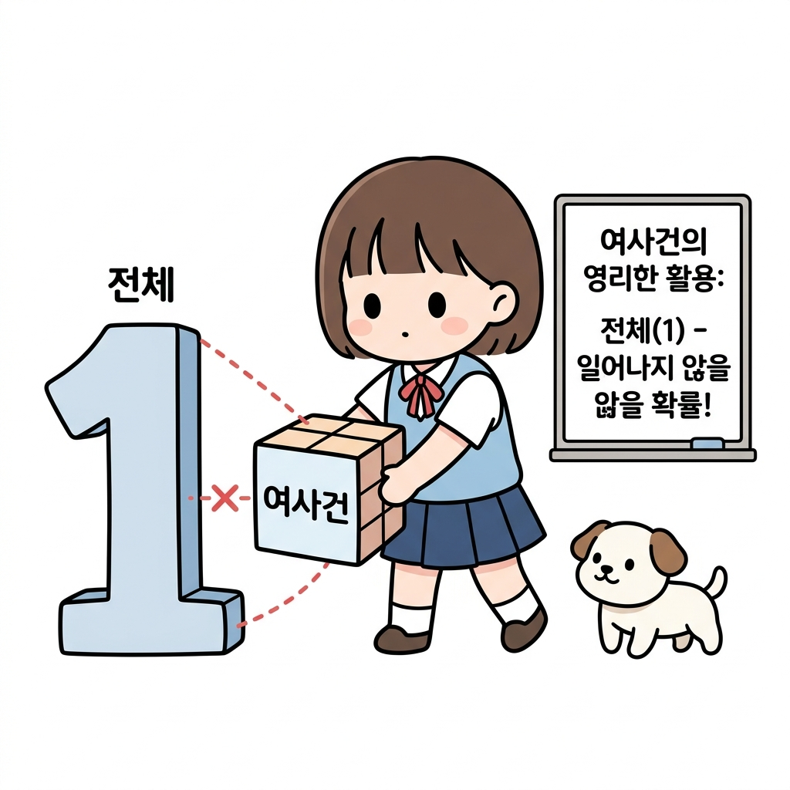
그림 02-9-12 전체 시행 중 모두 실패할 확률을 활용하여 적어도 한 번 성공할 여사건 확률을 연산하는 법- 여러 개의 독립사건이 일어날 때 ‘적어도 한 번 성공할 확률’을 직접 구하려면 복잡해집니다. 이럴 때는 곱셈법칙을 이용해 ‘모두 실패할 확률’을 먼저 구한 뒤, 전체 확률 1에서 이를 빼는 여사건의 방법을 결합하면 계산이 극적으로 간단해집니다.
(3) 큰 수의 법칙과 수학적 확률의 수렴
시행 횟수 N이 매우 커지면, 실제 실험을 통해 나타나는 실험적 확률 r / N은 수학적으로 유도된 참 확률(수학적 확률) P에 점점 수렴합니다.
- 시행 횟수가 적을 때는 우연히 높은 승률(예: 10번 중 7번 성공)이 나와 왜곡될 수 있으므로, 많은 횟수의 실험으로 참 확률을 교정해야 합니다.
3. 시각 자료: 독립사건의 확률 격자 및 곱셈 도식
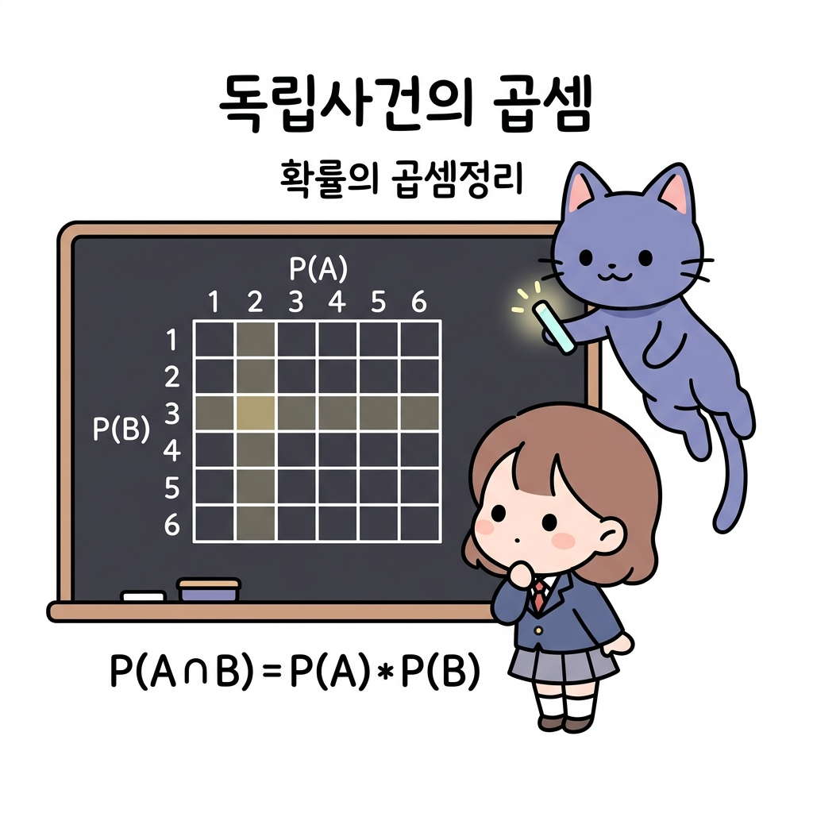
그림 02-9-13 2차원 의사결정 격자 내에서 두 독립사건이 겹치는 사건의 면적이 개별 확률의 곱셈과 일치함을 입증하는 도식4. 실전 예제
예제 1 (주사위 내기의 함정)
문제: 프로드가 토토에게 다음과 같은 내기를 제안했습니다.
- 토토는 주사위 눈 중에서 4개의 숫자(1, 2, 3, 4)를 고릅니다.
- 주사위 두 개(빨강, 파랑)를 동시에 던져 두 주사위에서 모두 토토가 고른 숫자가 나오면 토토가 이깁니다.
- 그렇지 않으면(적어도 하나가 5나 6이 나오면) 프로드가 이깁니다. 이 내기는 누구에게 유리한가요?
풀이 1 (격자 세기):
- 전체 경우의 수: 6 × 6 = 36가지
- 두 주사위에서 모두 1, 2, 3, 4가 나오는 경우의 수: 4 × 4 = 16가지
- 토토가 이길 확률: P(토토) = 16 / 36 = 4 / 9 ≈ 0.444
- 프로드가 이길 확률: P(프로드) = 1 - 4 / 9 = 5 / 9 ≈ 0.556
풀이 2 (독립사건 곱셈):
- 사건 A: 빨강 주사위에서 1, 2, 3, 4가 나올 확률 ➔ P(A) = 4 / 6 = 2 / 3
- 사건 B: 파랑 주사위에서 1, 2, 3, 4가 나올 확률 ➔ P(B) = 4 / 6 = 2 / 3
- 두 사건은 독립이므로: P(A ∩ B) = P(A) × P(B) = 2 / 3 × 2 / 3 = 4 / 9
결론: 토토가 이길 확률은 약 44.4%로 절반(50%)보다 작고, 프로드가 이길 확률은 55.6%로 더 높습니다. 따라서 이 내기는 프로드에게 절대적으로 유리합니다. 정답: 프로드가 유리함
예제 2 (주머니 속 구슬 꺼내기)
문제: 검은 공 2개와 흰 공 1개가 들어 있는 상자에서 동시에 두 손을 넣어 공을 2개 꺼냅니다. 이때 양손 모두에 검은 공이 들려 나올 확률을 구하세요.
풀이: 세 개의 공에 번호를 붙입니다: 검은 공(1번, 2번), 흰 공(3번)
- 공 2개를 동시에 꺼내는 전체 경우의 수: (1,2), (1,3), (2,3)의 총 3가지
- 양손 모두 검은 공이 되는 경우의 수: (1,2)로 총 1가지
- 따라서 확률은: P = 1 / 3 ≈ 0.333 정답: 1 / 3
5. 핵심 요약
- 두 사건이 서로 영향을 주지 않는다면 독립사건이다.
- 두 독립사건이 함께 일어날 확률은 각 사건의 확률을 곱하여 쉽게 구할 수 있다: P(A ∩ B) = P(A) × P(B).
- 겉보기에 조건이 아홉 개 중 하나를 고르거나(1~4가 나와서 유리해 보이는 등) 가능성이 커 보이는 내기일지라도, 수학적으로 독립사건의 곱셈이나 조합의 격자를 세밀히 계산해 보면 설계자의 함정(사기 행각)을 밝혀낼 수 있다.
02.9.4 표본공간과 배반사건
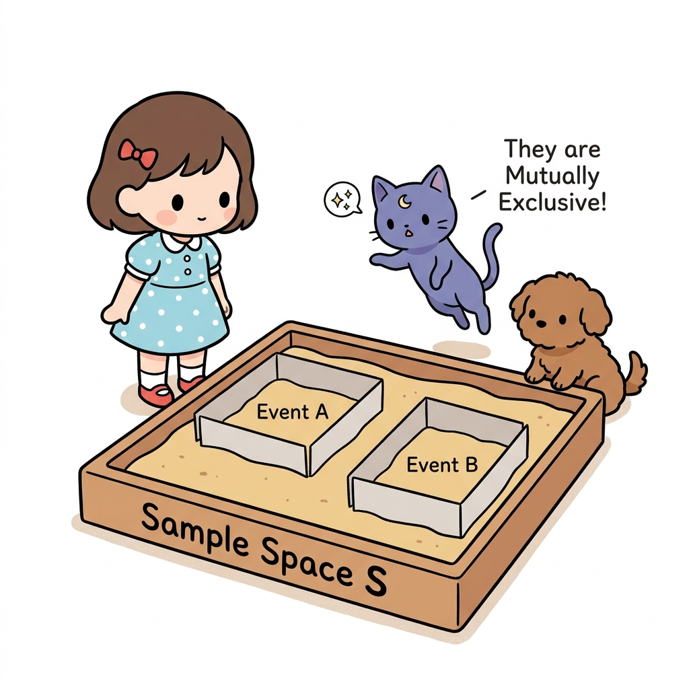
그림 02-9-14 거대한 표본공간 S 모래상자 안에 서로 전혀 겹치지 않는 울타리로 분리된 두 사건 A, B를 관찰하는 도로시와 지니확률 수학의 가장 기본 뼈대인 시행, 사건, 그리고 모든 가능성의 전체 집합인 표본공간(Sample Space)을 배웁니다. 더불어 절대 동시에 발생할 수 없어 서로 멀리 떨어져 격리된 배반사건(Mutually Exclusive Events)의 원리를 지니와 도로시의 모래상자 집합 비유를 통해 확실하게 머릿속에 각인시켜봅시다!
1. 학습 목표
- 시행, 사건, 표본공간 등 확률 계산의 기초가 되는 용어를 이해한다.
- 곱사건, 합사건, 여사건, 공사건을 집합 기호와 매칭하여 설명할 수 있다.
- 동시에 일어날 수 없는 사건인 배반사건의 개념을 명확히 정의한다.
2. 핵심 개념
(1) 시행과 사건
- 시행 (Trial): 주사위나 동전을 던지는 것처럼 같은 조건에서 반복할 수 있고, 그 결과가 우연에 의해 결정되는 실험이나 관찰을 뜻합니다.
- 표본공간 (Sample Space, S): 어떤 시행에서 일어날 수 있는 모든 결과의 집합입니다. (집합론의 전체집합 U에 대응)
- 사건 (Event): 표본공간 S의 부분집합으로, 특정 조건에 의해 나타나는 결과들의 모임입니다.
(2) 사건의 연산과 종류
- 합사건 (A ∪ B): 사건 A 또는 사건 B가 일어나는 사건입니다.
- 곱사건 (A ∩ B): 사건 A와 사건 B가 동시에 일어나는 사건입니다.
- 여사건 (Ac): 사건 A가 일어나지 않는 사건입니다.
- 공사건 (∅): 절대로 일어날 수 없는 사건입니다. (확률은 항상 0)
(3) 배반사건 (Mutually Exclusive Events)
두 사건 A와 B가 동시에 일어날 수 없을 때, 즉 곱사건이 공사건일 때(A ∩ B = ∅), 두 사건 A, B를 서로 배반사건이라고 합니다.
- 예시: 어떤 사람이 ‘남학생일 사건’과 ‘여학생일 사건’은 동시에 일어날 수 없으므로 서로 배반사건입니다.
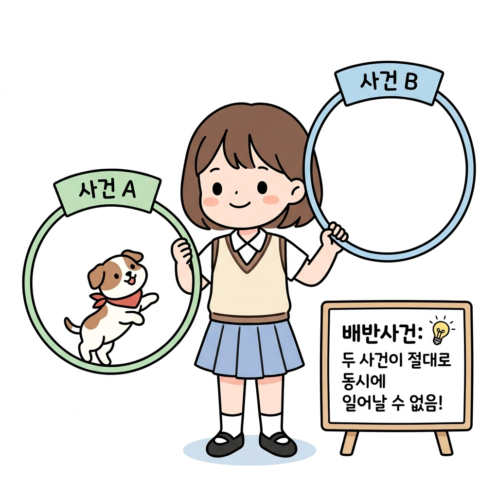
그림 02-9-15 한 학생이 안경을 쓴 학생 집합 A와 안경을 쓰지 않은 학생 집합 B에 동시에 속할 수 없는 배반사건 관계- 교실에 앉아 있는 학생들을 “안경을 쓴 학생 집합(Group A)”과 “안경을 쓰지 않은 학생 집합(Group B)”으로 나누었을 때, 한 학생이 동시에 안경을 썼으면서 동시에 안경을 쓰지 않을 수는 없습니다. 따라서 두 집합은 서로 겹치는 원소가 없는 배반사건(A ∩ B = ∅) 관계가 됩니다.
3. 시각 자료: 벤 다이어그램을 통한 사건의 관계 도식
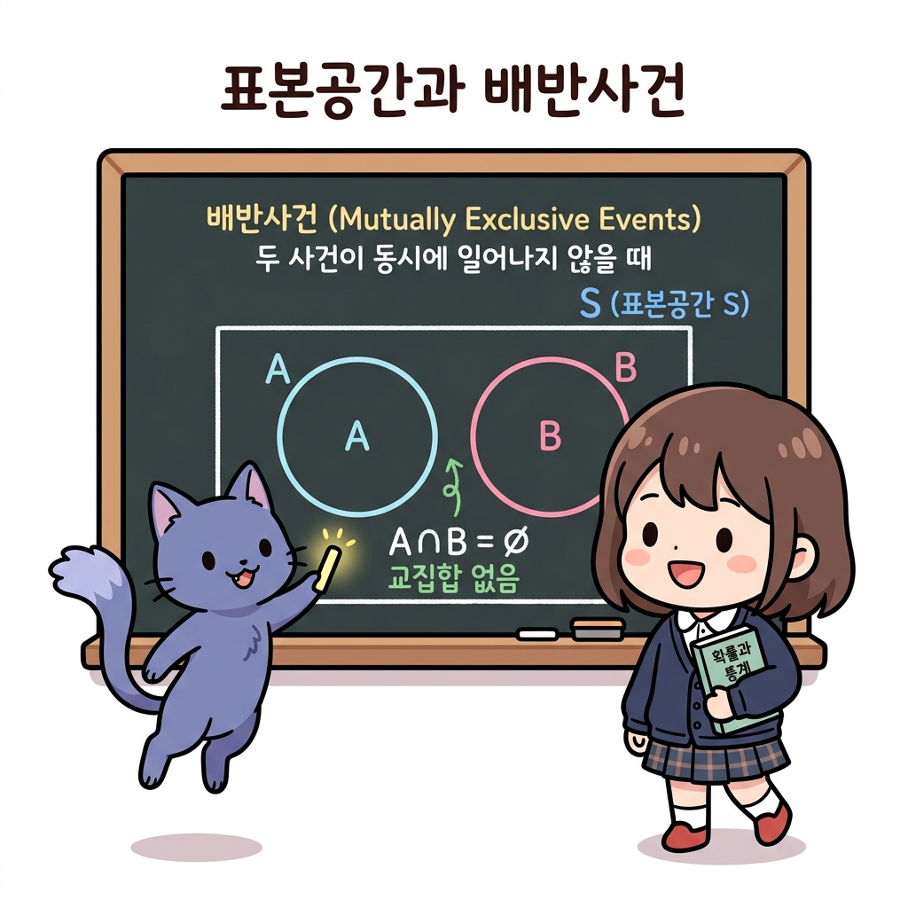
그림 02-9-16 전체 표본공간 S 안에서 교집합이 전혀 없이(공집합 ∅) 고립되어 있는 두 배반사건 A와 B의 벤다이어그램 도식4. 실전 예제
예제 1 (주사위 던지기에서의 사건 분석)
문제: 한 개의 주사위를 던지는 시행에서 홀수의 눈이 나오는 사건을 A, 4 이하의 눈이 나오는 사건을 B, 6의 약수의 눈이 나오는 사건을 C라 할 때, 세 사건 A, B, C 중 서로 배반사건인 두 사건은 무엇인가요?
풀이:
- 표본공간 S = {1, 2, 3, 4, 5, 6}
- 사건 A = {1, 3, 5}
- 사건 B = {1, 2, 3, 4}
- 사건 C = {1, 2, 3, 6}
두 사건의 교집합이 공집합인지를 확인합니다.
- A ∩ B = {1, 3} ≠ ∅ (배반 아님)
- B ∩ C = {1, 2, 3} ≠ ∅ (배반 아님)
- A ∩ C = {1, 3} ≠ ∅ (배반 아님)
이번에는 새로운 사건 D = {6}(6의 눈이 나올 사건)를 정의해 봅시다.
- A ∩ D = {1, 3, 5} ∩ {6} = ∅이므로 사건 A와 사건 D는 배반사건입니다. 정답: 사건 A와 사건 D는 배반사건
예제 2 (기본 확률 구하기)
문제: 빨간 주사위와 파란 주사위를 동시에 던질 때, 두 주사위에서 나온 눈의 차가 1일 확률을 구하세요.
풀이:
- 표본공간 S의 총 원소의 수 (모든 경우의 수): 6 × 6 = 36가지
- 두 눈의 차가 1이 되는 사건 E: (1,2), (2,1), (2,3), (3,2), (3,4), (4,3), (4,5), (5,4), (5,6), (6,5)의 총 10가지
- 따라서 수학적 확률 P(E)는: P(E) = 10 / 36 = 5 / 18 정답: 5 / 18